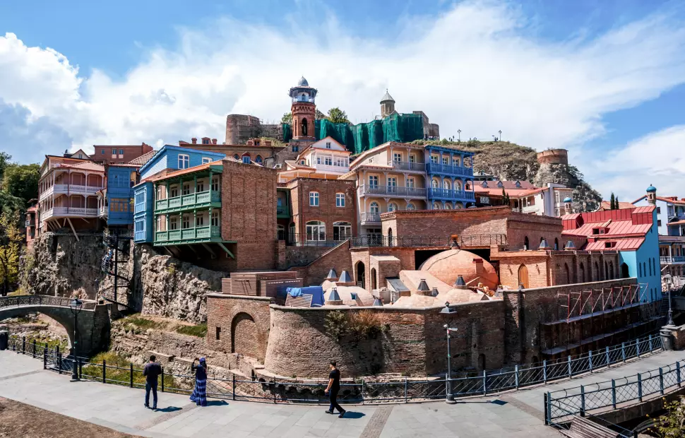
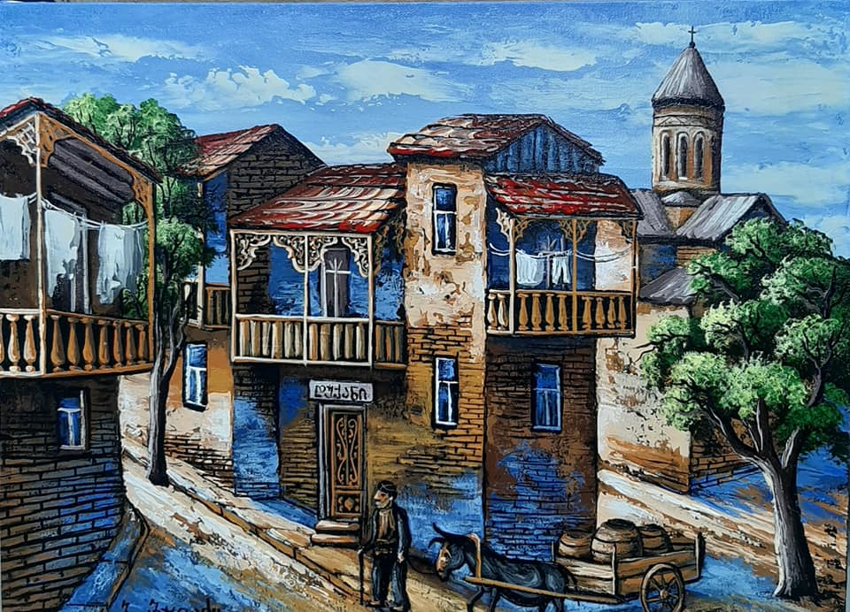
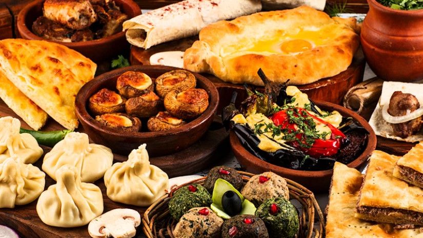

საუკეთესო კაფეები მინიმალისტურ სტილში
თუ ეძებთ მშვიდ გარემოს სამუშაოდ ან დასასვენებლად, ჩვენი ვებგვერდი ამაში დაგეხმარებათ...
TBILISI GUIDE
თუ ეძებთ მშვიდ გარემოს სამუშაოდ ან დასასვენებლად, ჩვენი ვებგვერდი ამაში დაგეხმარებათ...
TBILISI GUIDE
